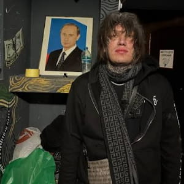

Code80 (настоящее имя — Юрий Александрович Матюшевский, родился 2 февраля 1997 года в Санкт-Петербурге) — российский рэпер, битмейкер и музыкальный продюсер, ключевая и культовая фигура в русскоязычном саундклауде (SoundCloud) и лоу-фай-рэп-сцене. Ранее был известен под псевдонимом Code10.
Code80 считается главным трендсеттером и каноном для целого поколения русскоязычных саундклауд-рэперов. Его фирменный перегруженный или обработанный эффектами вокал, синты и эстетика (мрачная романтика, рыцарские и мистические мотивы) оказали заметное влияние на творчество многих новых артистов. При этом высокую оценку его творчеству и уникальному стилю неоднократно давали известные представители современной хип-хоп-сцены.